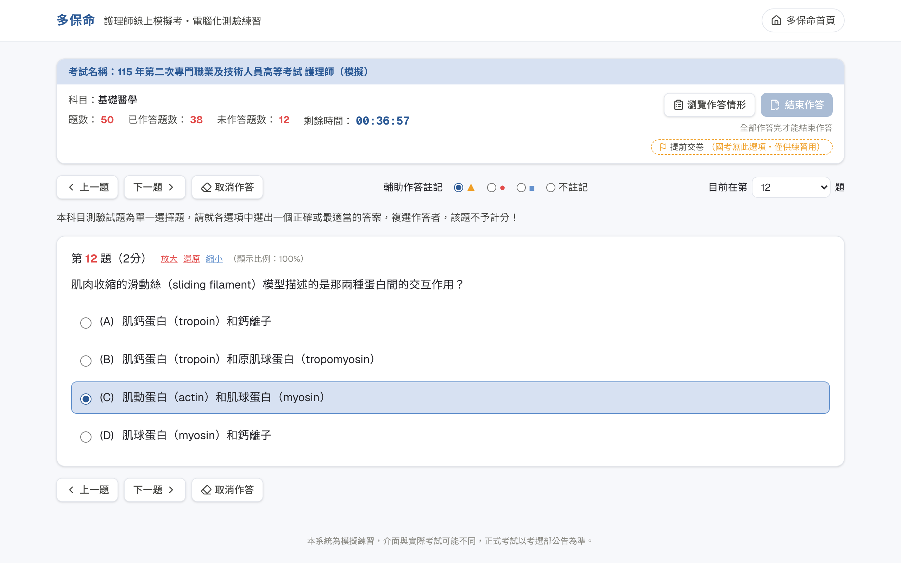
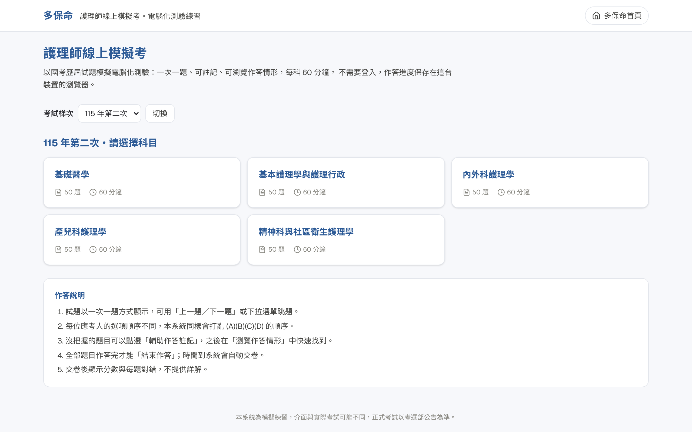
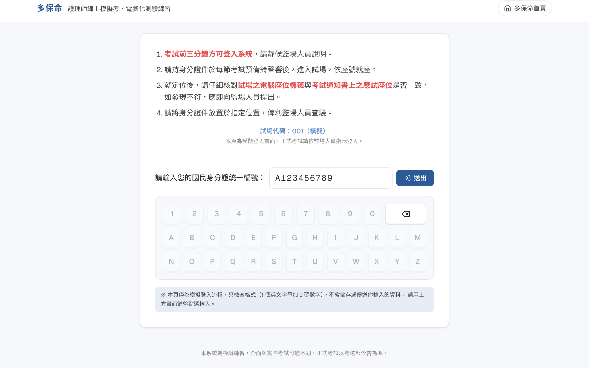
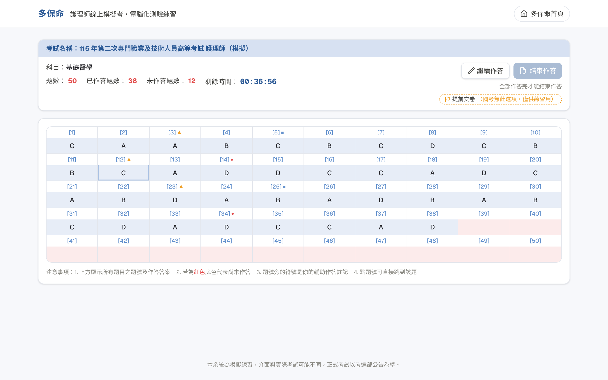
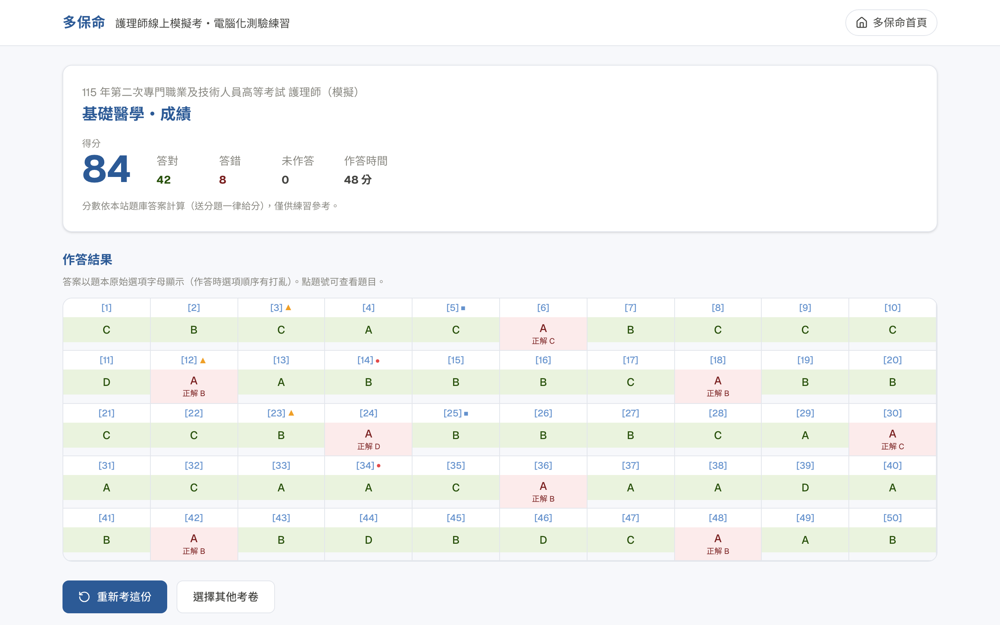

模擬考選部電腦化測驗介面・考前先練一次

電腦化測驗是在電腦上一題一題作答，換題、註記、檢查、交卷，與紙本方式大不相同。
所以我做了一個模擬考選部電腦化測驗的線上模擬考。跟一般只練操作的測驗不同，這裡用的是護理師國考的真實考題，一科一份完整考卷，熟悉介面的同時也能練題目。
打開網頁
就能開始
進度自動存在
這台裝置
每科 50 題
自動計分

目前收錄 115-2、115-1、114-3，持續更新中

系統不規定符號的意思，也可以改用信心度來分。重點是考前先決定好，整場都用同一套規則


免費・免註冊・直接練習
📌 收藏這篇，考前記得來模擬一次
💬 歡迎轉發、分享，讓更多國考生都用得到
📘 分章詳解 PDF 在 rnhighpass.com
多保命，祝大家國考 High Pass
模擬測驗介面與正式考試可能不同，正式考試以考選部公告為準